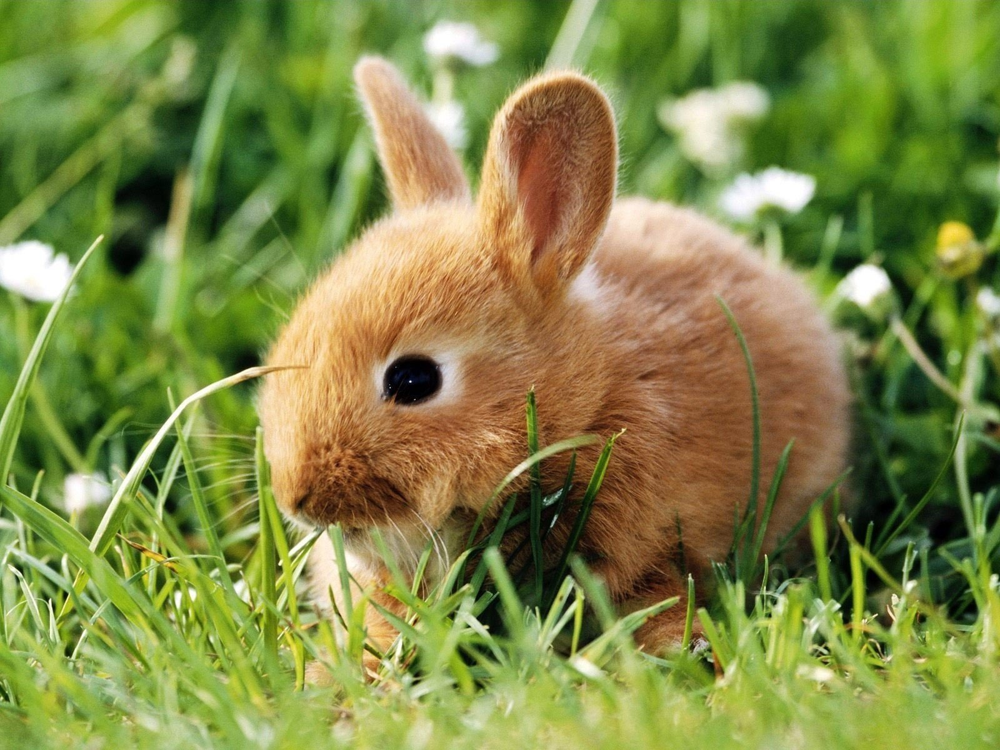

Для иcпользования тега создаем медиазапросы и применяем к нему условия:
- Если (max-width: 500px)-загрузится картинка с орлом
- Если (max-width: 800px)-загрузится картинка с уткой
- Если (max-width: 1200px)-загрузится картинка с пейзажем
Если ни одно условие не попадает под медиазапрос, то будет использоваться картинка с кроликом
